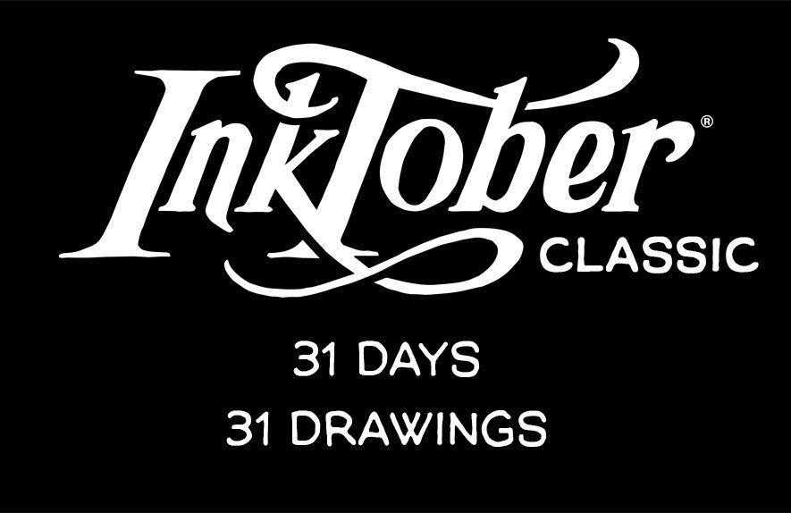
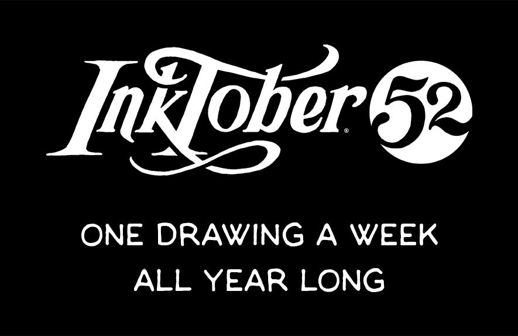

Jake Parker 2009-ben hozta létre az Inktober-t azzal a kihívással, hogy fejlessze festési készségeit
és
fejlessze pozitív rajzi szokásait. Azóta világméretű törekvéssé nőtte ki magát, és minden évben
művészek
ezrei vállalják a kihívást.
A részvételnek két módja van:


BÁRKI CSINÁLHATJA az INKTOBER-t,
CSAK VÉGY FEL EGY TOLLAT, ÉS KEZDJ EL RAJZOLNI.